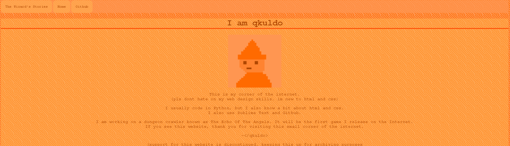
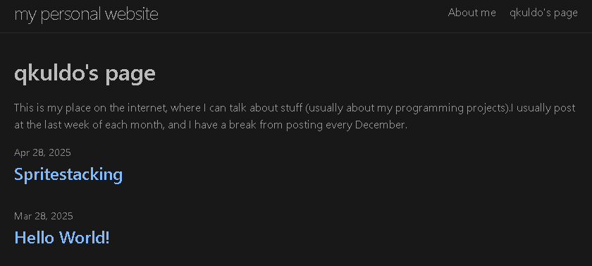

HARDLY EVER POSTS
back to homepage~- a tour of old blogs -~
JUNE 9 2026
-----
long time no see! the title wasn't lying, but i thought it would take more time for me to decide to make another post.
i got the idea to read through my old blogs after reading through the wikipedia page for blogs a few days ago.
it reminded me of my old, abandoned blogs.
(see? this isn't my first rodeo! it's actually my third.)
-----
the first one

i made this one last last year in 2024. all of the blogs here were for my old game echo of the angels(which is abandoned, sadly).
the blogs there were very short.(the longest one had 13 lines of text. it was the second one. the shortest was 3 LINES. it was the 3rd one.)
also my grammar was a bit off. not sure why.
it used the old version of my pfp, which was a terrible attempt at making pixel art in MS Paint. my new pfp is not pixel art, but it's still in MS Paint.(of the same character, if you couldn't tell.)
i still use this pfp on my youtube channel which i don't use.
there was a cool tower though!

the very cool tower
my HTML skills made the website look a bit old-fasioned, with that horribly centered text that stretched for miles on end, the repeating tile background, and the very odd empty space surrounding the main body of text. the most out-of-place thing here, however, is the BUTTONS. they do NOT look like they belong there. they belong on a newer website.
anyways, i still cherish it, as it shows a time when i was much more carefree and inexperienced with my code.
visit it if you want. it's not of much use anyways.(why do i not use buttons anymore?)
-----
the second one

other homepage
i made another website last year. oddly enough, this website was actually the result of the github skills lesson for github pages, which uses markdown with jekyll instead of HTML and CSS, unlike the last website. this was actually my first experience with YAML. unlike the website you're reading right now, the 2nd website uses a template instead of a design custom-made by me.
this website only had 2 blogs, and was also my attempt at posting daily (in the last week of each month). it also did not have any information on the fact i have a nintendo switch, making this one an outlier. despite having 2 blogs, they were much longer compared to my first website(but still not that long). the blogs here were for my also abandoned game bumpgun. the second contained a guide on spritestacking(a very performance-heavy technique i used in bumpgun that i learned from watching a video from dafluffypotato).(it still looks awesome today)

the very cool spritestacking
-----
that's all!
this blog took less time to write as expected, and hopefully this website doesn't die out as fast as the others.
(i don't think you'll even know if it does, due to my nonexistent posting schedule)
-----